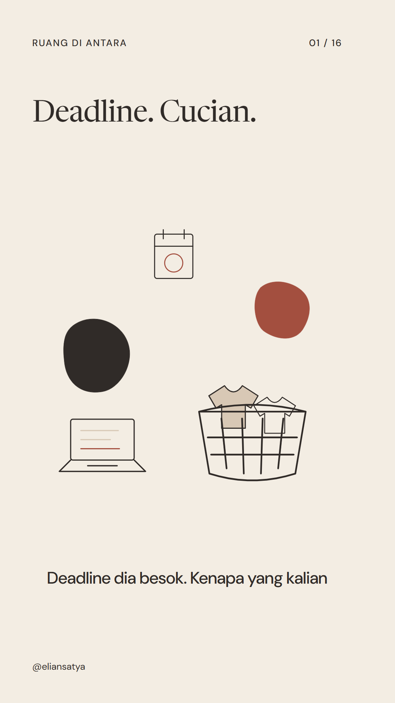
Deadline dia besok. Kenapa yang kalian ributin justru cucian malam ini?
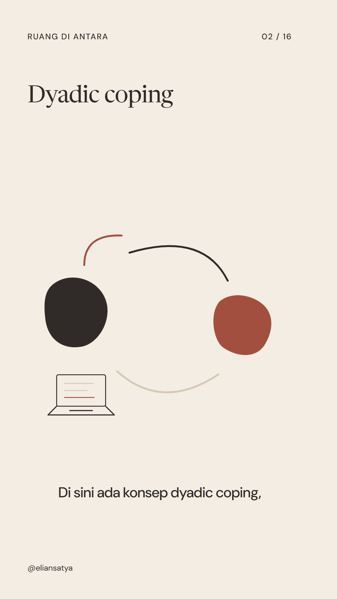
Di sini ada konsep dyadic coping, atau mengatasi stres bersama pasangan.
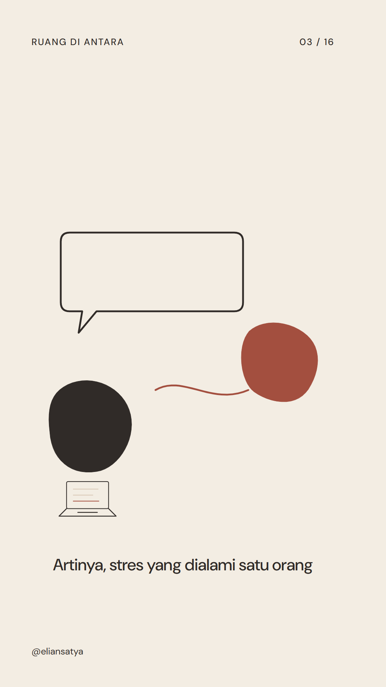
Artinya, stres yang dialami satu orang ditanggapi lewat komunikasi dan respons pasangannya.
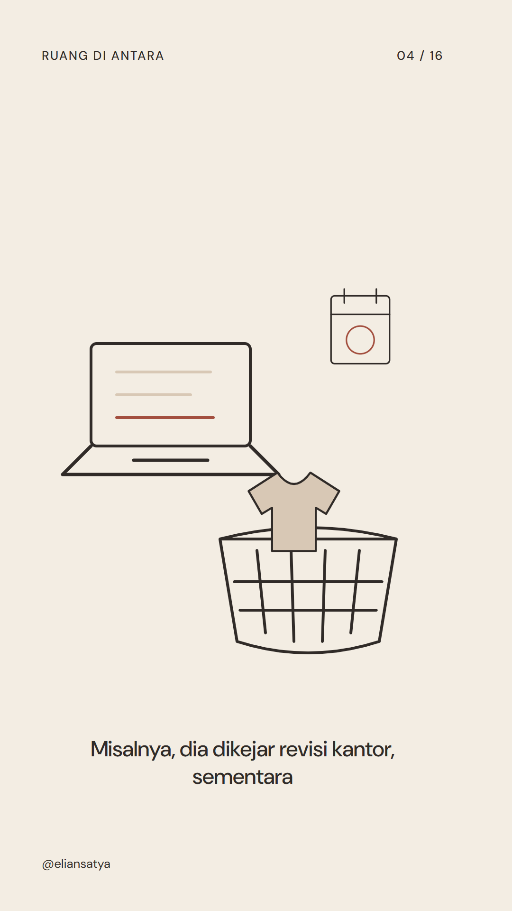
Misalnya, dia dikejar revisi kantor, sementara cucian yang dijanjikan belum dibereskan.
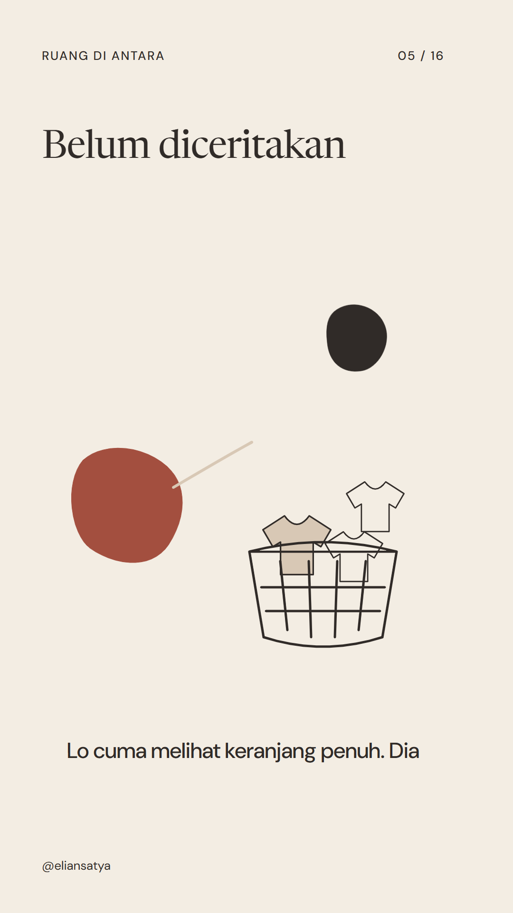
Lo cuma melihat keranjang penuh. Dia belum cerita seberapa kewalahan dirinya.
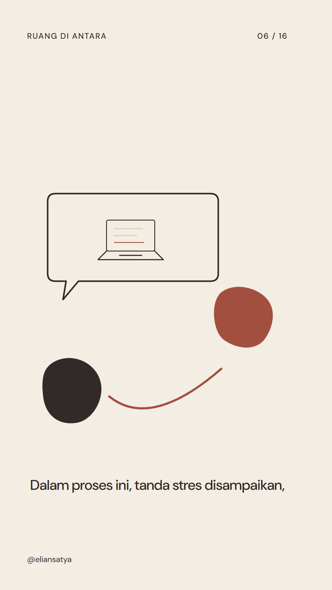
Dalam proses ini, tanda stres disampaikan, ditangkap, lalu direspons. Bantuan bisa berbentuk dukungan emosional.
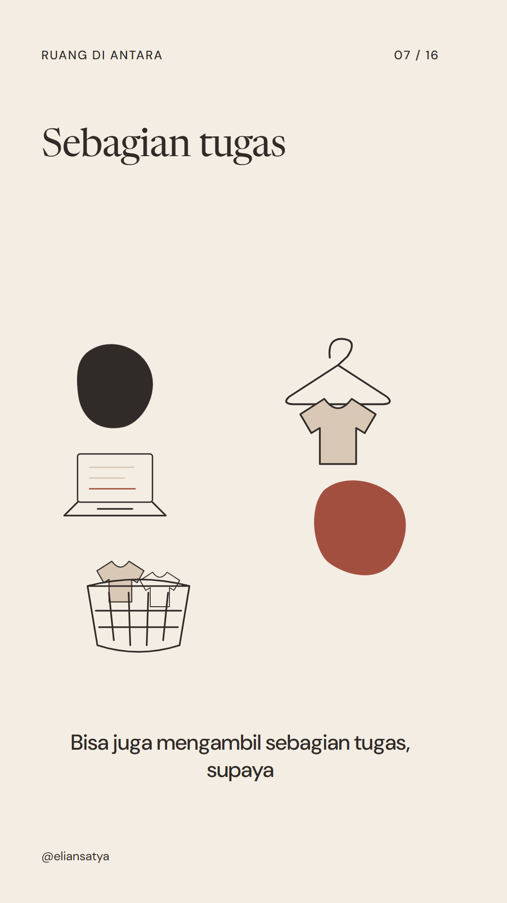
Bisa juga mengambil sebagian tugas, supaya pasangan punya ruang menghadapi tekanannya.
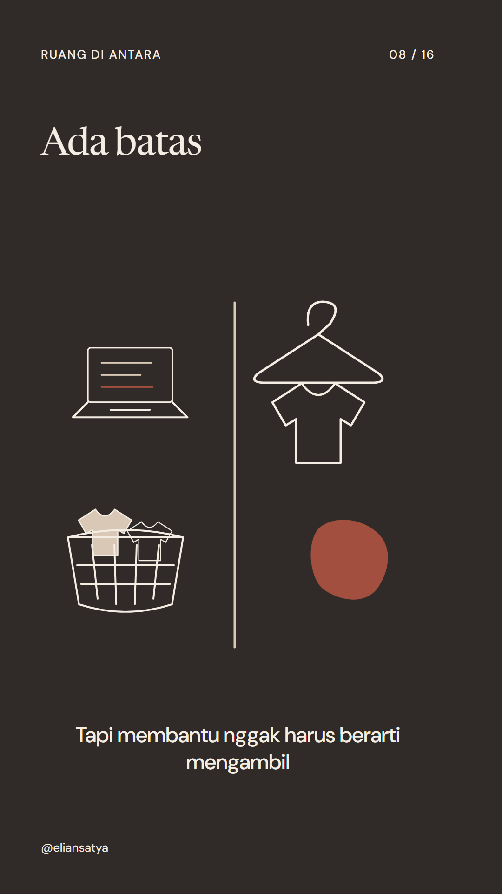
Tapi membantu nggak harus berarti mengambil semua tanggung jawabnya.
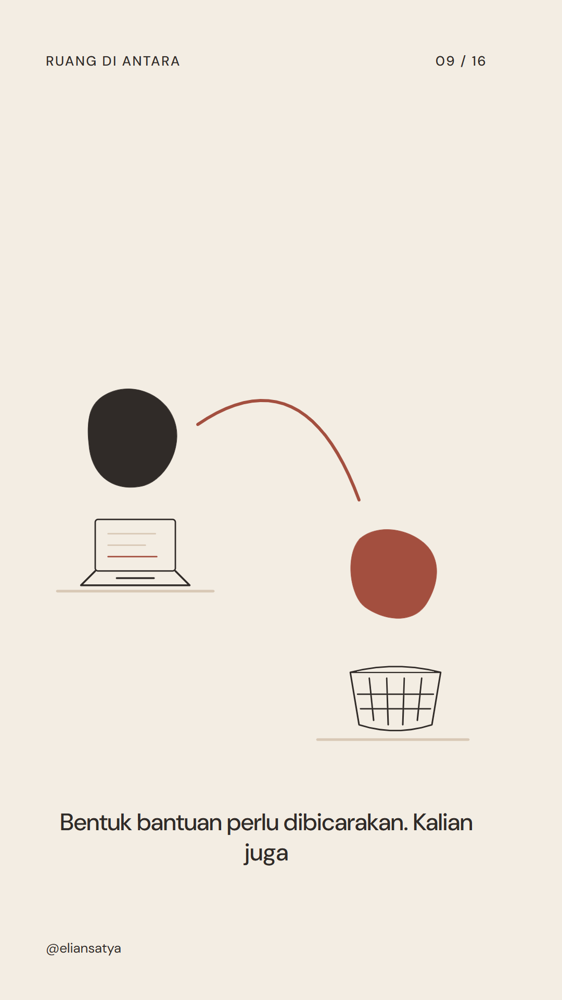
Bentuk bantuan perlu dibicarakan. Kalian juga punya tenaga dan batas yang berbeda.
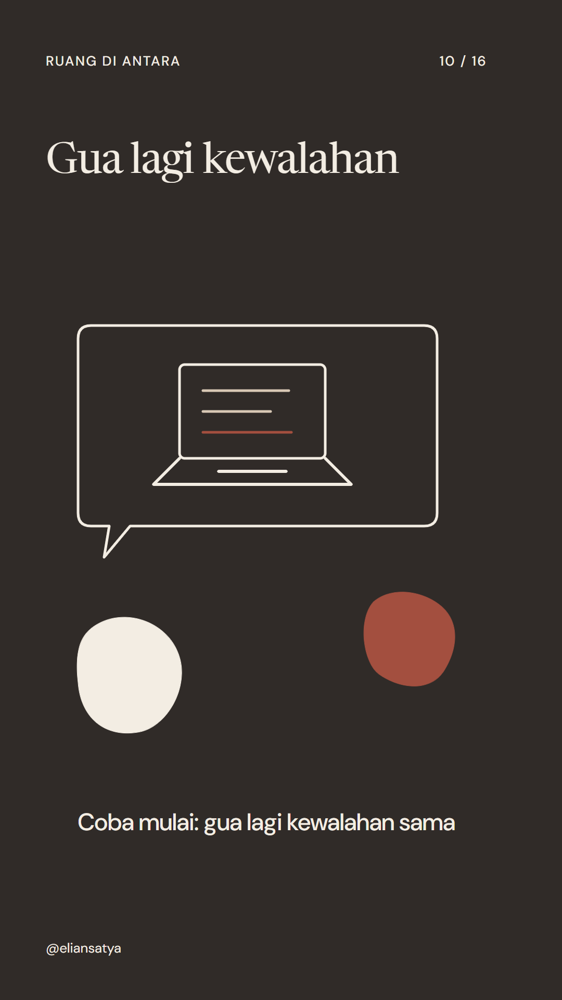
Coba mulai: gua lagi kewalahan sama revisi. Cucian gua belum kepegang.
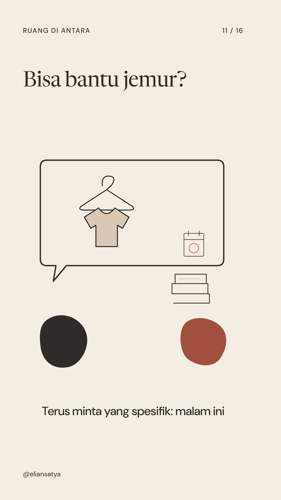
Terus minta yang spesifik: malam ini bisa bantu jemur? Gua yang lipat besok.
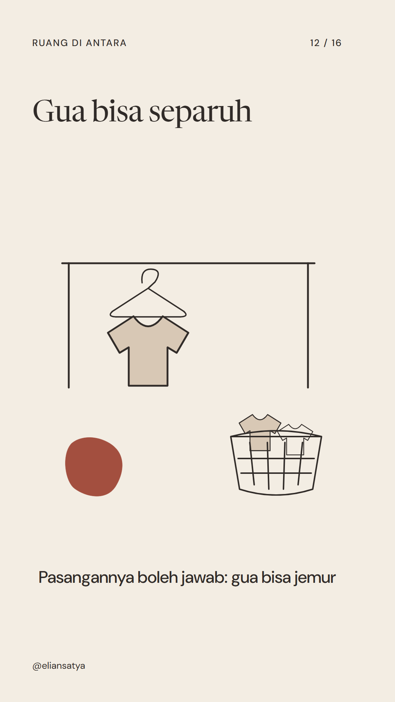
Pasangannya boleh jawab: gua bisa jemur separuh. Sisanya kita atur lagi.
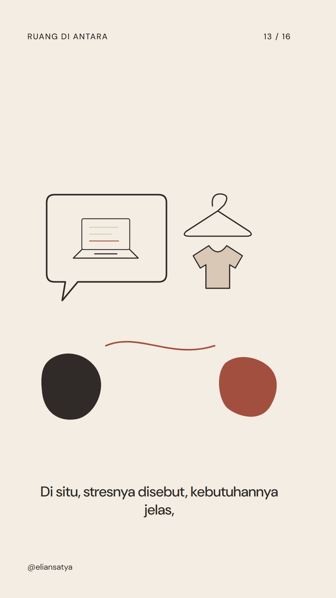
Di situ, stresnya disebut, kebutuhannya jelas, dan kemampuan membantu ikut mendapat tempat.
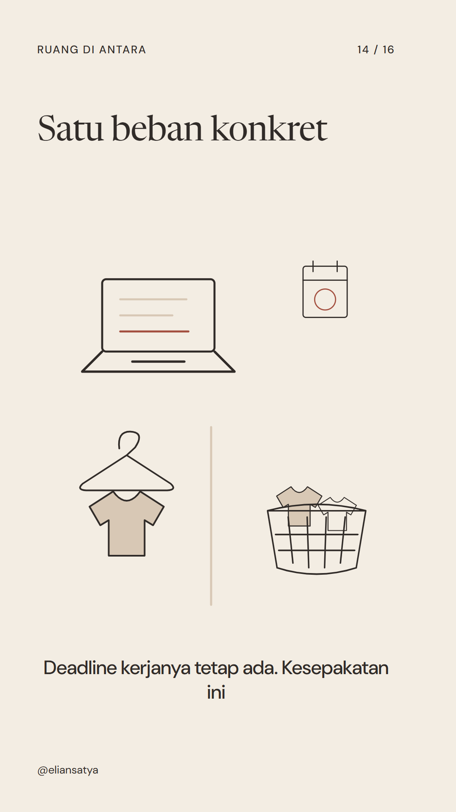
Deadline kerjanya tetap ada. Kesepakatan ini membagi satu beban rumah yang konkret.
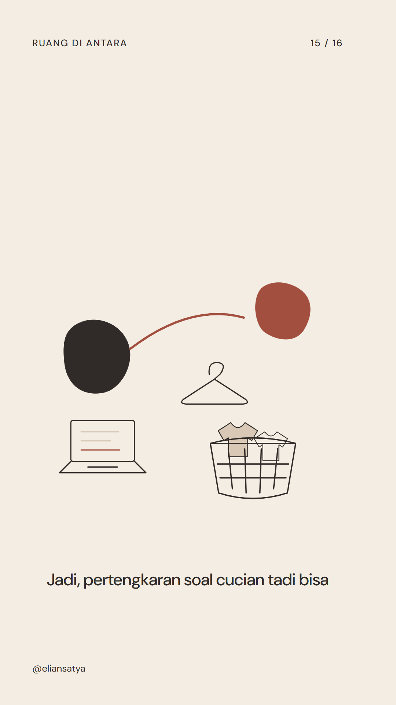
Jadi, pertengkaran soal cucian tadi bisa dibuka lewat pertanyaan yang lebih terarah.
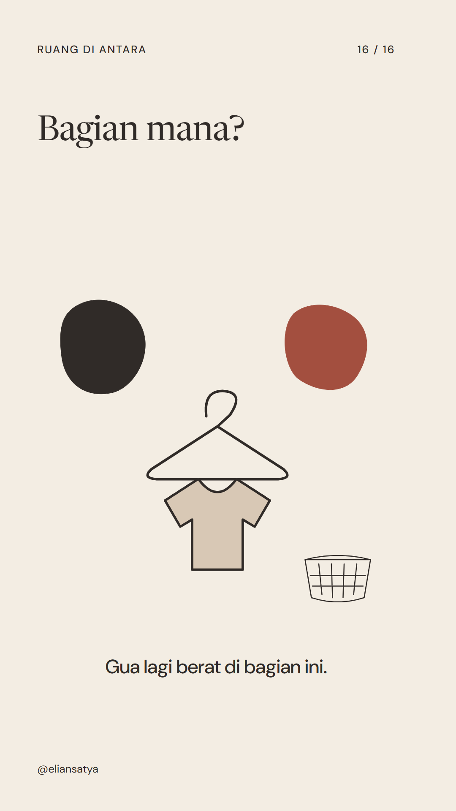
Gua lagi berat di bagian ini. Bagian mana yang bisa kita tangani bareng?